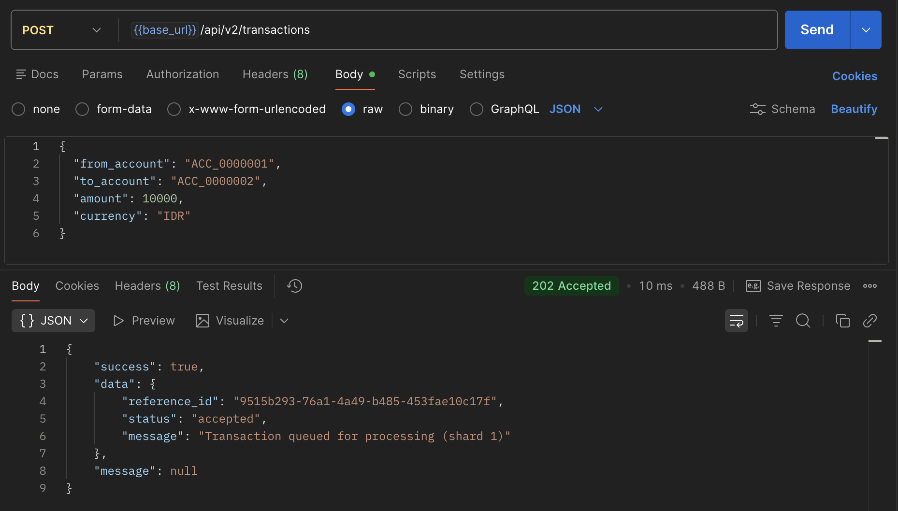
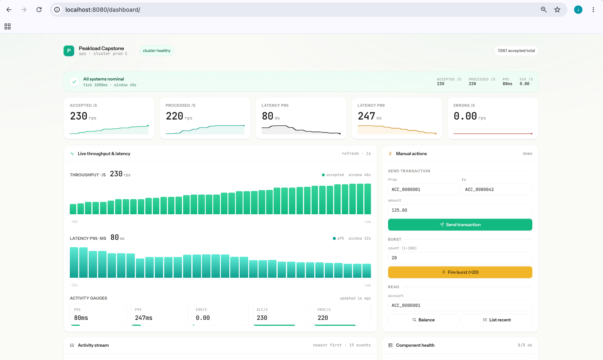
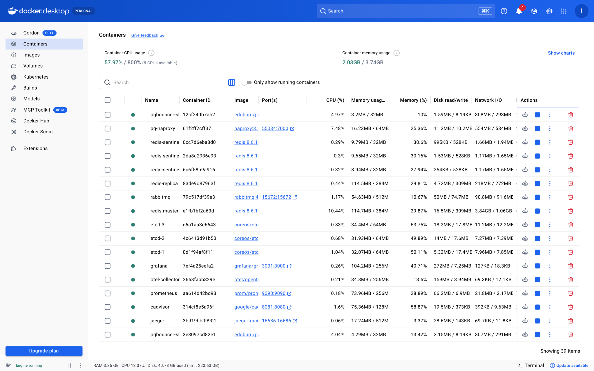
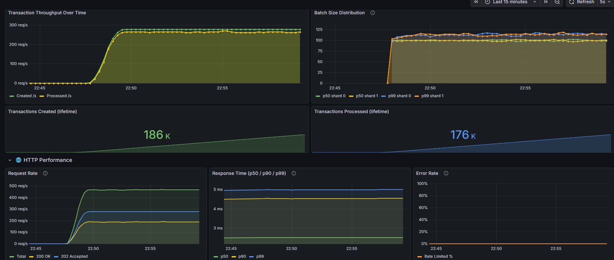
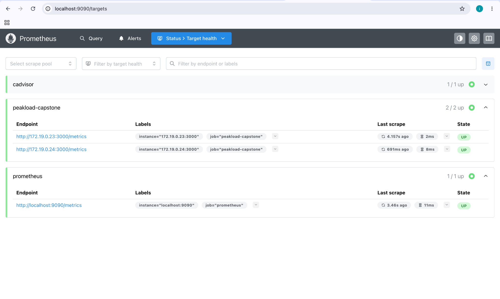
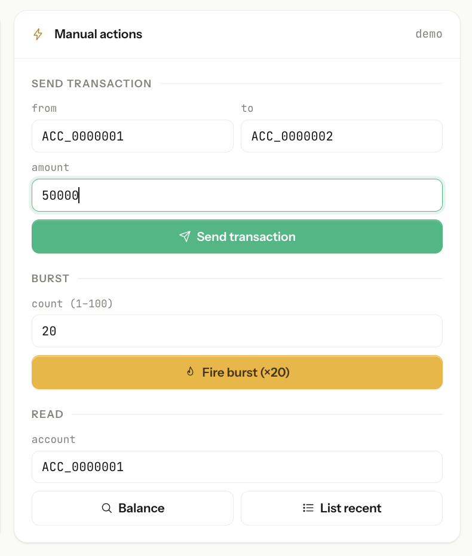
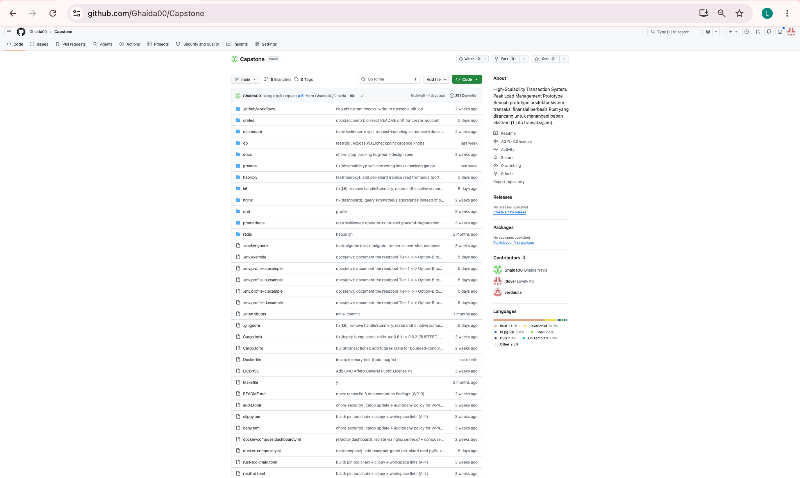

Ghaida Nayla
Technical Lead & System Architect
235150700111001 · TI
Capstone · Topik B.4 · Tim FullTIm · FILKOM UB 2026
Peakload
Peak Load Management & Read/Write Separation Berbasis Rust — backend yang menahan lonjakan 1 juta transaksi/jam dengan latensi P95 milidetik.
Tim Proyek
Enam anggota Teknik Informatika FILKOM UB — tim capstone Kelompok 8.
Technical Lead & System Architect
235150700111001 · TI
Backend API Engineer
235150700111012 · TI
Observability & Performance Engineer
235150701111014 · TI
235150700111043 · TI
235150701111012 · TI
235150701111043 · TI
Ir. Lutfi Fanani, S.Kom., M.T., M.Sc.
Departemen Teknik Informatika, FILKOM UB
lutfifanani@ub.ac.id ·
Profil dosen
Mitra Studi Kasus
Studi kasus perbankan digital — masalah nyata, solusi terukur SLO, tanpa mengekspos data confidential.
1 juta txn/jam, P95 > 10 detik — kegagalan layanan total standar perbankan digital.
Connection pool exhaustion & lock contention — primary DB jadi bottleneck baca dan tulis.
Tanpa backpressure & metrik per-endpoint — cascading failure sulit didiagnosis.
Tentang Proyek
Tim FullTIm membangun backend Rust production-style: 2 replika stateless, PostgreSQL sharded Patroni HA, Redis Sentinel, RabbitMQ + Transactional Outbox, middleware resilience, dan demo ops dashboard web.
Pengujian k6 (300 VU, 15 menit) membuktikan throughput ~1 juta txn/jam, P95 4,43 ms, error rate 0,00%. Seluruh stack naik dengan docker compose up.
Solusi
HTTP 202 → Transactional Outbox → RabbitMQ → batch consumer (≤200 msg, flush 250 ms). Durabilitas meski broker sempat down.
Tulis via pgBouncer → HAProxy /primary; baca via /replica per-shard. P50 balance read 0,796 ms.
backpressure → circuit breaker → rate limit (64-shard) → JWT auth. HTTP 503/429/401 per layer.
Prometheus, Grafana (SLO alerts), Jaeger tracing, demo ops dashboard React di /dashboard/.
Alur Sistem
GET /accounts/{id}/balance → moka L1 (1s TTL) → Redis L2 (10s) → HAProxy /replica → PostgreSQL.

Traceability
| Kebutuhan | Implementasi | Status |
|---|---|---|
| Transfer dana | POST /api/v2/transactions | Ya |
| Status transaksi | GET /status/{ref} | Ya |
| Riwayat transaksi | GET /api/v2/transactions | Ya |
| Cek saldo cepat | GET /accounts/{id}/balance | Ya |
| Registrasi akun | POST /api/v2/accounts | Ya |
| Anti double-spend | Dual idempotency | Ya |
| Tahan lonjakan | Middleware resilience | Ya |
| Read/write separation | HAProxy /primary & /replica | Ya |
| HA database | Patroni multi-shard | Ya |
| Monitoring real-time | Prometheus + Grafana + dashboard | Ya |
Fitur Utama



Stack
Arsitektur
Nginx LB, CSP headers, edge rate limit, 2 upstream app replicas.
Rust modular monolith: app, accounts, transactions, notifications, shared_kernel.
PG sharded Patroni, Redis Sentinel, RabbitMQ, profil skala A–D (1–3 shard).

Evaluasi
| Metrik (k6, 300 VU, 15m) | Hasil | Target |
|---|---|---|
| Throughput | ~1 juta txn/jam | 1 juta txn/jam |
| HTTP P95 | 4,43 ms | < 500 ms |
| Balance P95 | 4,68 ms | < 10 ms |
| Error rate | 0,00% (0/512.104) | < 5% |
| Unit tests | 152 pass | — |
Keterbatasan: Belum TLS/HTTPS production · Deploy cloud belum dilakukan (fokus Docker Compose lokal).
Repositori & Demo
git clone https://github.com/Ghaida00/Capstone cd Capstone cp .env.example .env docker compose up -d --build
Kartu API Contract & Arsitektur Interaktif di bawah membuka tampilan interaktif (Swagger UI & diagram klik), bukan kode mentah GitHub.
Diagram klik + referensi kode
Sumber HTML: GitHub


Penutup
Rust async, Transactional Outbox, sharding, Patroni, k6 soak — kompetensi distributed systems.
11 minggu Git PR workflow, 3 peran komplementer, demo dashboard untuk audiens non-teknis.
TLS Nginx · Cloud/K8s staging · Validasi mitra lebih awal.
FILKOM UB · Jl. Veteran No.10-11, Ketawanggede, Lowokwaru, Malang 65145